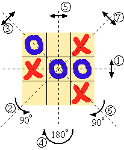

前述の局面 d/10 の第2 〜 10引数を3進数に見立て、それを10進数に 変換したものを状態番号とする。8通りの状態番号を計算し、その最小値を 現局面の状態番号とすることにより、対称同値な局面を 同じ局面と看做すことが可能となる。
8つの対称形は以下の通りである（図 1参照）。
[A,B,C,D,E,F,G,H,I] ： (default)
[G,H,I,D,E,F,A,B,C] ： 上下反転
[C,F,I,B,E,H,A,D,G] ： 左90度回転
[A,D,G,B,E,H,C,F,I] ： ＼軸反転
[I,H,G,F,E,D,C,B,A] ： 180度回転
[C,B,A,F,E,D,I,H,G] ： 左右反転
[G,D,A,H,E,B,I,F,C] ： 右90度回転
[I,F,C,H,E,B,G,D,A] ： ／軸反転

![[i18n checked]](i18n-ok.gif) Q-learning により学習を行う Tic-Tac-Toe プログラム
Q-learning により学習を行う Tic-Tac-Toe プログラム